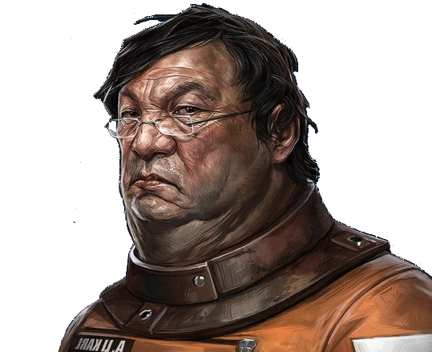
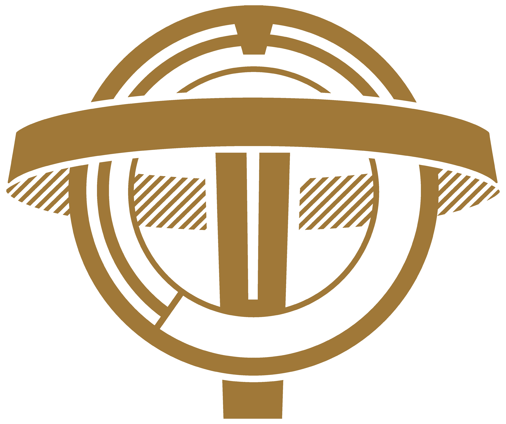
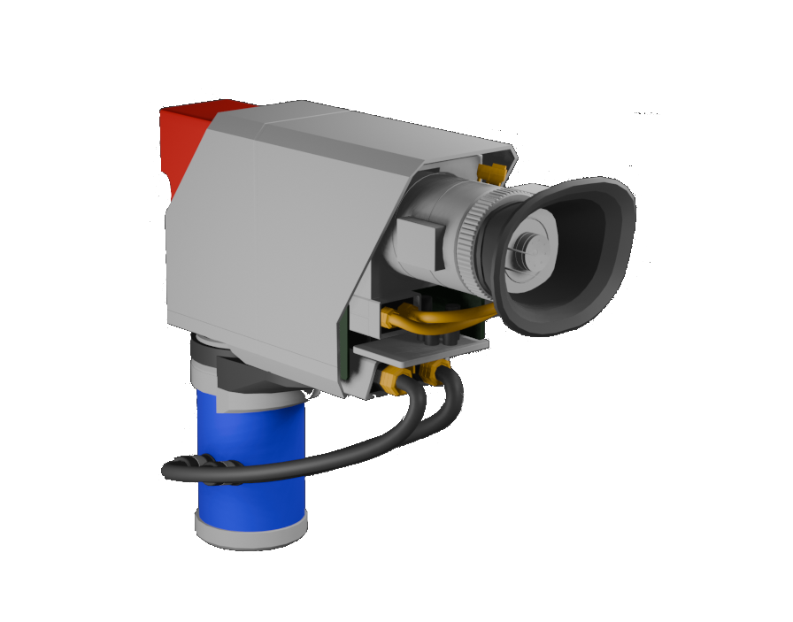
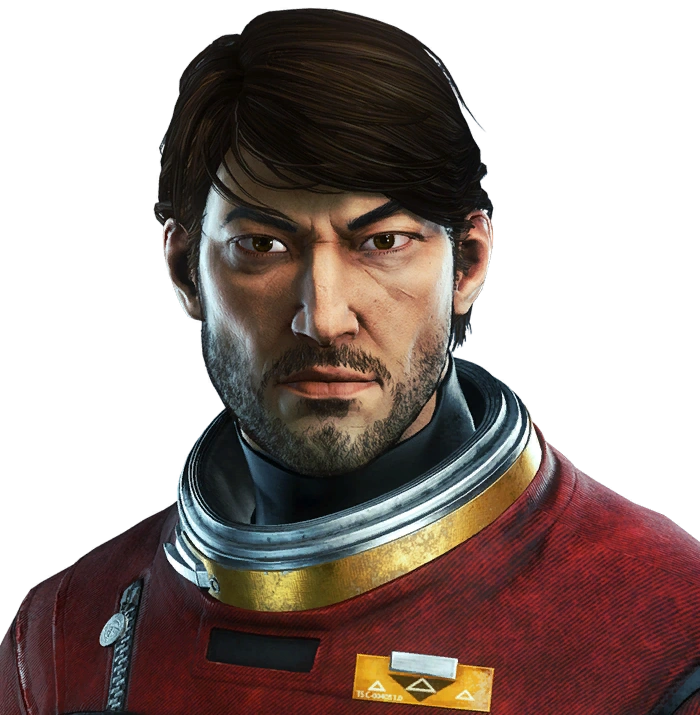
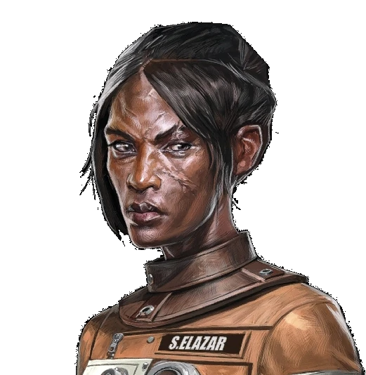

TranStar Industries
The Future Is
Already Here
Pushing the boundaries of human potential and deep space exploration.

Pushing the boundaries of human potential and deep space exploration.
Alex Yu
TranStar CEO
At TranStar, we do not ask what lies at the threshold of human potential. We cross it. Through breakthroughs in neuroscience, cognitive augmentation, and deep-space research, we are not simply advancing civilization — we are transcending it. The stars are not our destination. They are our beginning.

Advancing The Frontier
Studying neural modification to unlock the full spectrum of human cognitive and physical potential.
Classified research in typhon organisms, yeilding advances in human knowledge, volition and threat response.
Sustained lunar extraction and containment operations supplying the raw substrates that make TranStar's breakthroughs possible.
The story of TranStar


The Minds Behind The Matter

Directing TranStar's operations and long-term research mandate from Talos I.

Pioneer of the Neuromod framework and lead subject of the Experiment.

Overseeing Helium-3 extraction and substrate containment aboard TranStar's lunar holdings.

Commanding all security operations aboard TranStar's orbital facilities.